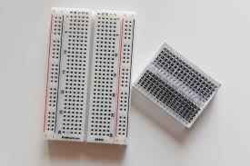

¿Qué es arduino?
Arduino es una plataforma de prototipos electrónica
de código abierto (open-source) basada en una sencilla placa con
entradas y salidas, en un entorno de desarrollo que está basado
en el lenguaje de programación Processing. Es un dispositivo que
conecta el mundo físico con el mundo virtual, o el mundo analógico
con el digital. Es una plataforma de desarrollo basada en una placa
electrónica de hardware libre que incorpora un microcontrolador
re-programable y una serie de pines hembra. Estos permiten establecer
conexiones entre el microcontrolador y los diferentes sensores y actuadores
de una manera muy sencilla.
1. RELE: Dispositivo electromecánico que actúa como un interruptor controlado por una corriente eléctrica. Se utiliza para activar o desactivar circuitos eléctricos de alta potencia mediante una señal de baja potencia, permitiendo el control remoto de dispositivos eléctricos.
2. Válvula solenoide: Componente que utiliza un electroimán para controlar el flujo de líquidos o gases. Al activar el solenoide, se mueve un vástago que abre o cierra la válvula, permitiendo o bloqueando el paso del fluido.
3. Sensor de humedad: Dispositivo que mide la cantidad de humedad en el aire o en materiales. Se utiliza en aplicaciones como la meteorología, agricultura y sistemas de climatización, proporcionando datos esenciales para el control ambiental.

4. Protoboard: Placa de pruebas diseñada para realizar conexiones temporales de circuitos electrónicos sin necesidad de soldadura. Facilita el prototipado rápido y la experimentación, permitiendo a los usuarios realizar cambios fácilmente.
5.Xiao ESP32-C6: Es una pequeña placa de desarrollo que utiliza el microcontrolador ESP32-C6, diseñado por Espressif. Ofrece conectividad Wi-Fi y Bluetooth, ideal para proyectos de IoT y aplicaciones embebidas. Su tamaño compacto y bajo consumo energético lo hacen adecuado para dispositivos portátiles y aplicaciones en redes de sensores.
6. Arduino Uno: Placa de microcontrolador basada en el ATmega328, popular entre los entusiastas de la electrónica y la programación. Ofrece un entorno fácil de usar para desarrollar proyectos interactivos, permitiendo el control de sensores, actuadores y otros componentes electrónicos mediante programación en C/C++.